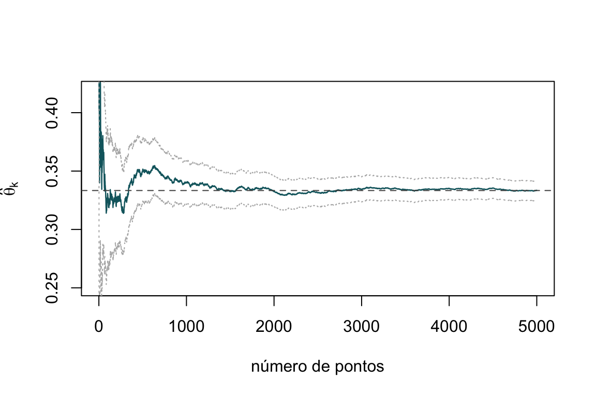
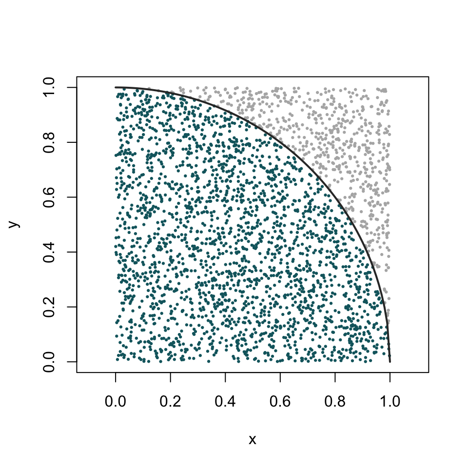

Capítulo 25 Cálculo de integrais por Monte Carlo
Chegámos a um dos pontos altos deste livro, onde a simulação deixa de ser apenas uma forma de gerar dados artificiais e se torna um verdadeiro instrumento de cálculo. Muitos integrais que surgem na estatística e nas ciências não têm primitiva expressável em forma fechada — pense-se no integral da densidade normal — e mesmo os métodos numéricos determinísticos clássicos, como a regra dos trapézios ou de Simpson, tornam-se impraticáveis quando o número de dimensões cresce. É aqui que entra o método de Monte Carlo: usar números aleatórios para aproximar o valor de um integral. A ideia é tão simples quanto poderosa, e assenta diretamente nos teoremas limites que estudámos no capítulo anterior.
25.1 Contexto histórico
O método de Monte Carlo nasceu no final da década de 1940, no Laboratório Nacional de Los Alamos, das mãos de Stanislaw Ulam, John von Neumann e Nicholas Metropolis. Ulam, convalescente de uma doença e a jogar paciências, perguntou-se qual seria a probabilidade de um jogo sair bem sucedido; percebendo que o cálculo combinatório exato era inviável, ocorreu-lhe que seria mais simples jogar muitas partidas e contar. Dessa intuição — substituir o cálculo exato pela repetição aleatória — nasceu uma técnica que von Neumann rapidamente adaptou aos problemas de difusão de neutrões então em estudo. O nome, sugerido por Metropolis, é uma alusão ao famoso casino do Mónaco, evocando a natureza aleatória do procedimento.
O método tem, contudo, um precursor ilustre e bem mais antigo: a agulha de Buffon. Em 1777, Georges-Louis Leclerc, conde de Buffon, mostrou que a probabilidade de uma agulha lançada ao acaso cruzar uma das linhas paralelas de um soalho depende de \(\pi\) — o que permite estimar \(\pi\) atirando agulhas e contando cruzamentos. É, em espírito, o primeiro método de Monte Carlo da história, com quase dois séculos de antecedência sobre Los Alamos.
25.2 A ideia fundamental
Seja \(g(x)\) uma função e suponhamos que se pretende calcular
\[ \theta = \int_{0}^{1} g(x)\, dx. \]
A chave do método está em reconhecer este integral como um valor esperado. Consideremos \(U\) uma variável aleatória com distribuição uniforme no intervalo \((0,1)\), cuja densidade é \(1\) nesse intervalo. Por definição de valor esperado,
\[ E[g(U)] = \int_{0}^{1} g(u) \cdot 1 \, du = \int_{0}^{1} g(x)\, dx = \theta. \]
Ou seja, o integral que queremos calcular é exatamente a média da variável aleatória \(g(U)\):
\[ \theta = E[g(U)]. \]
Esta reformulação é decisiva, porque sabemos aproximar valores esperados: basta gerar muitas observações e calcular a média amostral. Se \(U_1, \ldots, U_k\) são variáveis aleatórias independentes e uniformemente distribuídas em \((0,1)\), então \(g(U_1), \ldots, g(U_k)\) são i.i.d. com média \(\theta\). Pela lei forte dos grandes números, com probabilidade \(1\),
\[ \hat{\theta}_k = \frac{1}{k}\sum_{i=1}^{k} g(U_i) \;\longrightarrow\; E[g(U)] = \theta, \qquad \text{quando} \qquad k \to \infty. \]
Aprender a aproximar integrais definidos — em uma ou várias dimensões, em intervalos limitados ou ilimitados — através da média de avaliações de uma função em pontos aleatórios, e saber quantificar a incerteza dessa aproximação.
Em termos práticos, para aproximar \(\theta\) geramos uma grande quantidade de números aleatórios \(u_1, \ldots, u_k\) em \((0,1)\) e calculamos a média dos valores \(g(u_i)\):
\[ \theta \approx \frac{1}{k}\sum_{i=1}^{k} g(u_i). \]
É esta a essência do método de Monte Carlo para o cálculo de integrais.
25.3 O erro da aproximação
Uma estimativa sem uma medida da sua incerteza tem pouco valor. Felizmente, o mesmo enquadramento probabilístico que legitima o método fornece também o erro. O estimador \(\hat{\theta}_k\) é uma média de variáveis i.i.d., pelo que é não enviesado (\(E[\hat{\theta}_k] = \theta\)) e tem variância
\[ \operatorname{Var}(\hat{\theta}_k) = \frac{\sigma_g^2}{k}, \qquad \text{onde} \qquad \sigma_g^2 = \operatorname{Var}\big(g(U)\big). \]
O erro-padrão da estimativa é, portanto, \(\sigma_g / \sqrt{k}\), que decresce proporcionalmente a \(1/\sqrt{k}\). Como \(\sigma_g^2\) é em geral desconhecido, estimamo-lo pela variância amostral \(s_g^2\) dos valores \(g(u_i)\), obtendo o erro-padrão estimado \(s_g/\sqrt{k}\). E, pelo teorema limite central, um intervalo de confiança aproximado a \(95\%\) para \(\theta\) é
\[ \hat{\theta}_k \pm 1{,}96\,\frac{s_g}{\sqrt{k}}. \]
A convergência a uma taxa de \(1/\sqrt{k}\) é lenta: para reduzir o erro para metade é preciso quadruplicar o número de pontos. Esta é a principal fraqueza do método de Monte Carlo em problemas de baixa dimensão, onde os métodos determinísticos são muito mais eficientes. A grande virtude do Monte Carlo revela-se noutro lado: a taxa \(1/\sqrt{k}\) não depende da dimensão do integral. Um método determinístico baseado numa grelha vê o seu custo explodir exponencialmente com o número de dimensões (a “maldição da dimensionalidade”), ao passo que o Monte Carlo mantém a mesma taxa. É por isso que, em dimensão elevada, o Monte Carlo se torna imbatível.
25.4 Cálculo de \(\int_{a}^{b} g(x)\, dx\)
Suponhamos agora que queremos integrar \(g\) num intervalo qualquer \([a, b]\). Basta uma mudança de variável para nos reconduzir ao caso \((0,1)\). Definamos
\[ y = \frac{x - a}{b - a}, \qquad \text{de modo que} \qquad dy = \frac{dx}{b - a}. \]
Quando \(x\) percorre \([a, b]\), \(y\) percorre \([0, 1]\), e \(x = a + (b-a)y\). O integral transforma-se em
\[ \theta = \int_{0}^{1} g\big(a + (b-a)y\big)\,(b-a)\, dy = \int_{0}^{1} h(y)\, dy, \]
onde \(h(y) = (b - a)\, g\big(a + (b - a)y\big)\). Reduzimo-lo, assim, ao caso padrão, e podemos aplicar de novo o método de Monte Carlo: geram-se números aleatórios uniformes em \((0,1)\), avalia-se \(h\) nesses pontos e toma-se a média:
\[ \theta \approx \frac{1}{k}\sum_{i=1}^{k} h(y_i). \]
Existe uma forma equivalente e talvez mais intuitiva de o exprimir: gerar diretamente pontos uniformes no intervalo \([a, b]\) e multiplicar a média das avaliações pela amplitude do intervalo,
\[ \theta \approx (b - a)\cdot \frac{1}{k}\sum_{i=1}^{k} g(u_i), \qquad u_i \sim \mathcal{U}(a, b). \]
25.4.1 Exemplo — um integral elementar
Ilustremos o método com um integral cujo valor exato conhecemos. Consideremos
\[ \theta = \int_{0}^{1} x^2\, dx = \frac{1}{3}. \]
Geramos \(k = 10\,000\) números aleatórios em \([0,1]\), avaliamos \(g(u_i) = u_i^2\) e tomamos a média, que deverá aproximar-se de \(1/3\).
set.seed(2024)
g <- function(x) x^2
k <- 10000
u <- runif(k, min = 0, max = 1)
theta_hat <- mean(g(u)) # estimativa de Monte Carlo
theta_hat
## [1] 0.3323
integrate(g, lower = 0, upper = 1) # valor de referência
## 0.3333 with absolute error < 3.7e-15Acrescentemos a estimativa do erro, que raramente deve faltar num cálculo de Monte Carlo:
erro_padrao <- sd(g(u)) / sqrt(k)
ic <- theta_hat + c(-1, 1) * 1.96 * erro_padrao
c(estimativa = theta_hat, erro_padrao = erro_padrao,
ic_inf = ic[1], ic_sup = ic[2])
## estimativa erro_padrao ic_inf ic_sup
## 0.332306 0.002967 0.326491 0.338121O valor exato \(1/3 \approx 0{,}3333\) cai, como esperado, dentro do intervalo de confiança. Vejamos agora o integral no intervalo \([1, 2]\),
\[ \int_{1}^{2} x^2\, dx = \frac{7}{3}, \]
aplicando a transformação para \([0,1]\) e, em alternativa, a forma direta com pontos em \([1, 2]\).
set.seed(2024)
a <- 1; b <- 2
k <- 10000
# Forma 1: pontos em (0,1) e função transformada h(y)
u <- runif(k)
mean((b - a) * g(a + (b - a) * u))
## [1] 2.332
# Forma 2: pontos diretamente em (a, b)
u2 <- runif(k, a, b)
(b - a) * mean(g(u2))
## [1] 2.322
# Valor de referência
integrate(g, lower = 1, upper = 2)
## 2.333 with absolute error < 2.6e-14As duas formas coincidem, como devem, e ambas se aproximam de \(7/3 \approx 2{,}333\).
25.4.2 A convergência em imagem
Vale a pena ver a estimativa a convergir à medida que acumulamos pontos. O gráfico seguinte mostra a estimativa acumulada de \(\int_0^1 x^2\,dx\) a estabilizar em torno de \(1/3\), ladeada por uma banda de erro que se estreita ao ritmo de \(1/\sqrt{k}\).
set.seed(2024)
k <- 5000
u <- runif(k)
valores <- u^2
estim_acum <- cumsum(valores) / seq_along(valores)
# erro-padrão acumulado
var_acum <- (cumsum(valores^2) / seq_along(valores) - estim_acum^2)
ep_acum <- sqrt(var_acum / seq_along(valores))
plot(estim_acum, type = "l", col = "#10656d", lwd = 1.2,
ylim = c(0.25, 0.42),
xlab = "número de pontos", ylab = expression(hat(theta)[k]))
lines(estim_acum + 2 * ep_acum, col = "grey70", lty = 3)
lines(estim_acum - 2 * ep_acum, col = "grey70", lty = 3)
abline(h = 1/3, lty = 2, col = "grey30")
Figura 25.1: Estimativa acumulada do integral de x² em [0,1] em função do número de pontos, com banda de dois erros-padrão. A estimativa converge para o valor exato (linha tracejada) e a incerteza estreita-se ao ritmo de \(1/\sqrt{k}\).
25.5 Cálculo de \(\int_{0}^{\infty} g(x)\, dx\)
Para integrais em intervalos ilimitados, uma mudança de variável reconduz-nos igualmente ao intervalo \((0,1)\). Para \(\int_{0}^{\infty} g(x)\, dx\), aplica-se a substituição
\[ y = \frac{1}{x + 1}, \qquad \text{de modo que} \qquad dy = -\frac{dx}{(x+1)^2} = -y^2\, dx. \]
Quando \(x\) vai de \(0\) a \(+\infty\), \(y\) vai de \(1\) a \(0\), e \(x = \tfrac{1}{y} - 1\). Trocando os limites (o que absorve o sinal), obtém-se
\[ \theta = \int_{0}^{1} h(y)\, dy, \qquad \text{onde} \qquad h(y) = \frac{g\!\left(\tfrac{1}{y} - 1\right)}{y^2}. \]
Nem sempre esta substituição em particular é a melhor. Uma alternativa muitas vezes mais eficiente para caudas exponenciais consiste em reconhecer o integral como um valor esperado relativamente a uma densidade não uniforme que saibamos simular. Por exemplo, \(\int_0^\infty g(x)\,dx = \int_0^\infty \frac{g(x)}{\lambda e^{-\lambda x}}\,\lambda e^{-\lambda x}\,dx = E\!\left[\frac{g(X)}{\lambda e^{-\lambda X}}\right]\) com \(X \sim \text{Exp}(\lambda)\). Esta é a ideia da amostragem por importância, em que a escolha da densidade de amostragem pode reduzir drasticamente a variância do estimador.
25.6 O método “acerta-ou-falha” e a estimativa de \(\pi\)
O método que temos usado — a média amostral — não é a única via. Há uma variante geométrica, o método acerta-ou-falha (em inglês, hit-or-miss), que recupera diretamente a intuição de Buffon e é particularmente vívido.
A ideia: para estimar a área de uma região contida num retângulo conhecido, atiram-se pontos ao acaso sobre o retângulo e conta-se a fração que cai dentro da região. Essa fração, multiplicada pela área do retângulo, estima a área procurada. O exemplo canónico é a estimativa de \(\pi\): um quarto de círculo de raio \(1\) tem área \(\pi/4\) e está inscrito no quadrado unitário. Atirando pontos ao acaso no quadrado, a proporção dos que caem dentro do círculo (isto é, com \(x^2 + y^2 \leq 1\)) aproxima \(\pi/4\).
set.seed(2024)
k <- 100000
x <- runif(k)
y <- runif(k)
dentro <- x^2 + y^2 <= 1
pi_hat <- 4 * mean(dentro)
pi_hat
## [1] 3.139
set.seed(2024)
n_plot <- 3000
xp <- runif(n_plot); yp <- runif(n_plot)
dentro_p <- xp^2 + yp^2 <= 1
plot(xp, yp, pch = 19, cex = 0.3, asp = 1,
col = ifelse(dentro_p, "#10656d", "grey70"),
xlab = "x", ylab = "y")
curve(sqrt(1 - x^2), from = 0, to = 1, add = TRUE, lwd = 2, col = "grey20")
Figura 25.2: Estimativa de \(\pi\) pelo método acerta-ou-falha: pontos aleatórios no quadrado unitário. Os que caem dentro do quarto de círculo (a azul) representam uma fração próxima de \(\pi\)/4.
O método acerta-ou-falha é um caso particular do método da média amostral, aplicado à função indicadora \(g(x,y) = \mathbf{1}\{x^2 + y^2 \leq 1\}\). Por essa razão, a sua variância é tipicamente maior do que a de estimadores baseados na média de uma função suave, pelo que, quando existe uma alternativa por média amostral, esta costuma ser preferível. O método acerta-ou-falha vale sobretudo pela transparência geométrica e pelo seu valor histórico e pedagógico.
25.7 Integrais multidimensionais
É na dimensão elevada que o método de Monte Carlo mostra todo o seu valor. Suponhamos que \(g\) é uma função de \(n\) argumentos e que se pretende calcular
\[ \theta = \int_{0}^{1}\!\int_{0}^{1}\!\cdots\!\int_{0}^{1} g(x_1, \ldots, x_n)\, dx_1\, dx_2 \cdots dx_n. \]
Tal como no caso unidimensional, este integral é um valor esperado: \(\theta = E\big[g(U_1, \ldots, U_n)\big]\), onde \(U_1, \ldots, U_n\) são uniformes independentes em \((0,1)\). Para o estimar, geram-se \(k\) conjuntos independentes, cada um com \(n\) coordenadas uniformes independentes,
\[\begin{align*} U_{1}^{1}, & \ldots, U_{n}^{1} \\ U_{1}^{2}, & \ldots, U_{n}^{2} \\ & \;\;\vdots \\ U_{1}^{k}, & \ldots, U_{n}^{k}, \end{align*}\]
e as variáveis \(g(U_{1}^{i}, \ldots, U_{n}^{i})\), \(i = 1, \ldots, k\), são i.i.d. com média \(\theta\). Estima-se então
\[ \theta \approx \frac{1}{k}\sum_{i=1}^{k} g\big(U_{1}^{i}, \ldots, U_{n}^{i}\big). \]
25.7.1 Exemplo — um integral duplo
Estimemos
\[ \theta = \int_{0}^{1}\!\int_{0}^{1} (x^2 + y^2)\, dx\, dy, \]
cujo valor exato é \(\tfrac{1}{3} + \tfrac{1}{3} = \tfrac{2}{3}\).
set.seed(2024)
k <- 100000
x <- runif(k)
y <- runif(k)
g2 <- x^2 + y^2
theta_hat <- mean(g2)
erro_padrao <- sd(g2) / sqrt(k)
c(estimativa = theta_hat, exato = 2/3, erro_padrao = erro_padrao)
## estimativa exato erro_padrao
## 0.665648 0.666667 0.001332A estimativa aproxima-se de \(2/3\) com uma incerteza controlada — e, o que é crucial, a mesma abordagem funcionaria sem alterações significativas para um integral em \(10\) ou \(100\) dimensões, onde qualquer método de grelha seria impensável.
25.8 Síntese
O método de Monte Carlo transforma o problema de calcular um integral no problema de estimar um valor esperado, resolvido pela média de avaliações da função em pontos aleatórios. A sua justificação é a lei dos grandes números; a quantificação do seu erro, o teorema limite central. Converge lentamente, ao ritmo de \(1/\sqrt{k}\), mas com a vantagem decisiva de essa taxa ser independente da dimensão — o que faz dele o método de eleição para integrais de dimensão elevada, omnipresentes na estatística moderna, na física e nas finanças. Nos casos aqui tratados usámos a distribuição uniforme como base; a generalização para outras distribuições de amostragem, com vista a reduzir a variância, abre a porta a técnicas mais avançadas, como a amostragem por importância.
25.9 Exercícios
Use simulação para aproximar os integrais seguintes. Sempre que possível, compare a sua estimativa com o valor exato e apresente também o erro-padrão e um intervalo de confiança a \(95\%\).
1. \(\displaystyle\int_{0}^{1} \exp(e^x)\, dx\).
2. \(\displaystyle\int_{0}^{1} (1 - x^2)^{3/2}\, dx\).
3. \(\displaystyle\int_{-2}^{2} e^{x + x^2}\, dx\).
4. \(\displaystyle\int_{0}^{\pi/2} \cos(x)\, dx\). (Valor exato: \(1\).)
5. \(\displaystyle\int_{0}^{\infty} x\,(1 + x^2)^{-2}\, dx\). (Valor exato: \(1/2\).)
6. \(\displaystyle\int_{-\infty}^{\infty} e^{-x^2}\, dx\). (Valor exato: \(\sqrt{\pi}\).) Sugestão: separe o integral em duas metades ou explore a simetria.
7. \(\displaystyle\int_{0}^{1}\!\int_{0}^{1} e^{(x+y)^2}\, dy\, dx\).
8. \(\displaystyle\int_{0}^{1}\!\int_{0}^{1} (x^2 + y^2)\, dx\, dy\). (Valor exato: \(2/3\).)
9. (Estimativa de \(\pi\) e taxa de convergência.) Estime \(\pi\) pelo método acerta-ou-falha e represente graficamente o valor absoluto do erro \(|\hat{\pi}_k - \pi|\) em função de \(k\), em escala logarítmica em ambos os eixos. Confirme visualmente que o erro decresce aproximadamente como \(1/\sqrt{k}\) (declive \(-1/2\)).
10. (A agulha de Buffon.) Simule o lançamento de \(10\,000\) agulhas de comprimento \(\ell = 1\) sobre um soalho de linhas paralelas afastadas de \(d = 2\). Sabendo que a probabilidade de uma agulha cruzar uma linha é \(\frac{2\ell}{\pi d}\), use a proporção de cruzamentos para estimar \(\pi\). Compare a eficiência com o método acerta-ou-falha do exercício anterior.
11. (Erro em função de \(k\).) Para o integral \(\int_0^1 e^x\, dx = e - 1\), estime \(\theta\) com \(k = 10^2, 10^3, 10^4, 10^5, 10^6\) e registe o erro absoluto de cada estimativa. Represente o erro em função de \(k\) numa escala log-log e confirme a taxa \(1/\sqrt{k}\).
12. (Redução de variância por variáveis antitéticas.) Para estimar \(\int_0^1 e^x\, dx\), compare o estimador de Monte Carlo simples com o estimador antitético, que usa os pares \(\big(g(U_i), g(1 - U_i)\big)\). Estime a variância de cada estimador por repetição e quantifique a redução obtida. Explique por que razão a técnica é eficaz quando \(g\) é monótona.
13. (Alta dimensão.) Estime o volume da bola unitária em dimensão \(n\), \(\displaystyle V_n = \int_{[-1,1]^n} \mathbf{1}\{x_1^2 + \cdots + x_n^2 \leq 1\}\, dx_1\cdots dx_n\), pelo método acerta-ou-falha, para \(n = 2, 3, 5, 10\). Compare com a fórmula exata \(V_n = \pi^{n/2}/\Gamma(n/2 + 1)\) e comente como a proporção de acertos (e, portanto, a eficiência) se degrada à medida que a dimensão aumenta.